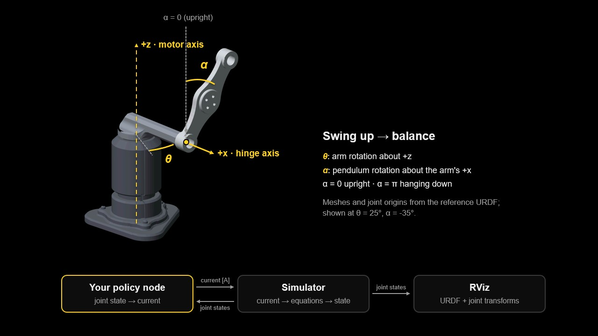
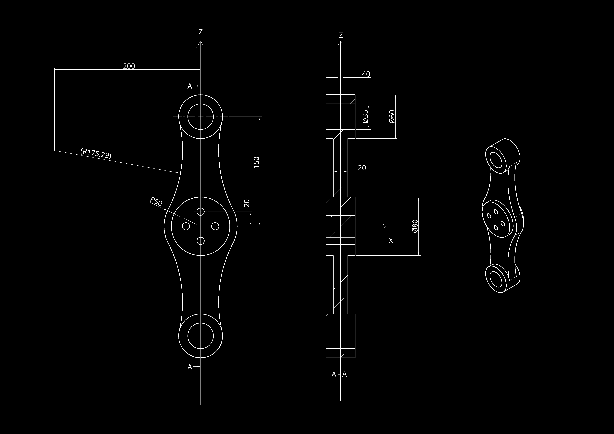
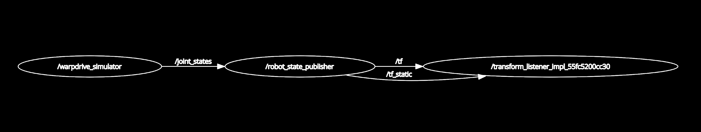
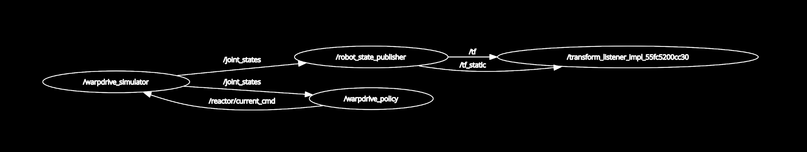

- Create a new document called
Pendulumand model the part from the drawing: sketch a profile, then add or remove material with extrusions. Keep the drawing's axes aligned with the CAD axes. - Assign the material: titanium, 4500 kg/m³.
Assignment · Prof. Dr. Robert Katzschmann · TA: Max Firkowski
Mr. Melon's Warpdrive
Rebuild the model, learn the controller, reconnect the reactor
Mr. Melon is a famous and extremely wealthy spaceship builder. A recent cyberattack has corrupted his company's systems: parts of the ship models, reactor controllers and communication software have disappeared. Before his next ship can leave the hangar, someone must reconstruct the missing components of its warpdrive. That someone is you.
All code for the assignment is in the repository github.com/firkowski/mr-melons-warpdrive. You clone it during setup; there is nothing else to download from this page.
- Part 1 · CAD
- 25 points
- Part 2 · ROS 2
- 30 points
- Part 3 · RL
- 45 points
The reactor's stabiliser is a Furuta pendulum: a motor turns a horizontal arm, and a pendulum swings freely about a joint at the arm's tip. To restart the reactor, the controller must swing the pendulum up from its resting position and keep it upright.
In this assignment you combine three skills you will need throughout the course and in your project: you reconstruct a part in CAD and extract the physical properties a simulator needs, connect a controller to a simulated robot through ROS 2, and train that controller with reinforcement learning.

The three parts
- Recover the missing pendulum: rebuild it in CAD from its blueprint and extract its mass properties.
- Reconnect the reactor through ROS 2: complete the node that runs a policy in the ROS 2 loop, and test it with a dummy policy.
- Restore the reactor controller: design a reward, train one policy for swing-up and balancing, evaluate it and demonstrate it in ROS 2.
The ROS 2 part comes before training on purpose: with a working node you can watch every policy you train in RViz, and problems in your node are not mistaken for problems in your policy.
What you edit
| File | What to do | Part |
|---|---|---|
config/reactor_params.yaml | Replace the null pendulum values with your CAD results | 1 |
urdf/model/pendulum.stl | Your exported pendulum mesh, in mm | 1 |
urdf/reactor.urdf | Set the pendulum's visual <origin> (marked TODO) | 1 |
warpdrive/policy_node.py | Complete the ROS 2 policy node (marked TODO) | 2 |
warpdrive/task.py | Implement reward(). You are free to create helper functions in warpdrive/task.py or in separate files | 3 |
Everything else is supplied: the equations of motion, a Gymnasium environment, the training and evaluation scripts, the ROS 2 simulator, URDF, RViz configuration and launch file. Do not change the physics, the environment, the simulator or the evaluator.
Setup
macOS · Windows · UbuntuIf you run into errors during setup, see Troubleshooting at the bottom of this page.
On every system you install ROS 2 Humble from RoboStack with micromamba, into an environment called ros_env. RoboStack brings its own Python, so ROS, training and your policy node all use the same interpreter. Pick your system in the bar at the top; the commands below change with it.
On Windows, use PowerShell for every command and put the workspace on a short path without spaces, for example directly in C:\.
On macOS, use the Terminal app (zsh). Both Apple Silicon and Intel Macs work.
On Ubuntu (22.04 or newer, including the course VM), use a terminal (bash). If your ~/.bashrc sources a system ROS installation (/opt/ros/...), remove that line: it conflicts with RoboStack.
1Install micromamba
"${SHELL}" <(curl -L micro.mamba.pm/install.sh)With Homebrew, brew install micromamba also works.
Invoke-Expression ((Invoke-WebRequest -Uri https://micro.mamba.pm/install.ps1 -UseBasicParsing).Content)
Windows also needs Visual Studio 2022 with C++ support (workload “Desktop development with C++”).
Close and reopen the terminal afterwards.
2Create the ROS 2 environment
micromamba create -n ros_env -c conda-forge -c robostack-humble ros-humble-desktop micromamba activate ros_env micromamba config append channels robostack-humble --env micromamba install -c conda-forge ros-dev-tools git rviz2
If an RViz window opens, ROS works. Activating ros_env also sets up ROS; no extra source of ROS itself is needed. The RoboStack guide has more detail if a step fails.
3Get the package
Go to the folder where you want to keep your work, then create the workspace there. Choose a path without spaces, and avoid folders synced by OneDrive or iCloud.
mkdir -p reactor_ws/src && cd reactor_ws/src git clone https://github.com/firkowski/mr-melons-warpdrive.git melon_warpdrive cd melon_warpdrive
mkdir reactor_ws\src; cd reactor_ws\src git clone https://github.com/firkowski/mr-melons-warpdrive.git melon_warpdrive cd melon_warpdrive
This creates a colcon workspace called reactor_ws in the current folder and clones the assignment repository into its src folder as melon_warpdrive.
4Install the Python dependencies
With ros_env active and in the package folder, install PyTorch (CPU) and the package with its training and plotting extras:
python -m pip install torch python -m pip install -e ".[rl,plots]" "setuptools<80"
python -m pip install torch --index-url https://download.pytorch.org/whl/cpu python -m pip install -e ".[rl,plots]" "setuptools<80"
setuptools<80 avoids a colcon error, option --editable not recognized.
5Build the workspace
First turn on Developer Mode in the Windows settings (System › For developers). It allows the symlinks that --symlink-install creates.
From the package folder, go up to the workspace folder and build. The second line prints the workspace's full path: note it down, you need it in step 6.
cd ../.. pwd colcon build --symlink-install --packages-select melon_warpdrive source install/setup.zsh
cd ../.. pwd colcon build --symlink-install --packages-select melon_warpdrive source install/setup.bash
cd ..\.. Get-Location colcon build --symlink-install --merge-install --packages-select melon_warpdrive .\install\setup.ps1
--symlink-install means edits to Python files, the URDF and the YAML take effect without rebuilding. Rebuild after adding new files, such as pendulum.stl: run the same colcon build command from the workspace folder, then go back to the package folder with cd src/melon_warpdrive cd src\melon_warpdrive.
6In every new terminal
Replace path/to/reactor_ws with the workspace path you noted in step 5.
micromamba activate ros_env cd path/to/reactor_ws source install/setup.zsh cd src/melon_warpdrive
micromamba activate ros_env cd path/to/reactor_ws source install/setup.bash cd src/melon_warpdrive
micromamba activate ros_env cd path\to\reactor_ws .\install\setup.ps1 cd src\melon_warpdrive
From here on, every command is the same on all three systems and runs from the package folder.
7Check the installation
Start the simulator and RViz with the approximate parameters that come with the dummy policy:
ros2 launch melon_warpdrive reactor.launch.py "parameters_file:=$PWD/runs/dummy/reactor_params.yaml"
RViz should open and show the reactor with a glitched-out pendulum at the tip of the arm. The glitch is intended: you replace the mesh with your own model in Part 1. Stop the launch with Ctrl+C.
Before training
Training uses the CPU heavily for 10–20 minutes on a recent laptop, longer on older machines or in a virtual machine. Close other programs and stop your computer from going to sleep during a run. If you work in a virtual machine, give it 50–75 % of your RAM and most of your CPU cores.
Part 125 points
Recover the missing pendulum
The reactor's pendulum model is corrupted; only its blueprint survived. Rebuild the part from the blueprint below, assign the specified material, extract its mass properties for the simulator and add it to the visual robot model.
We recommend OnShape, a CAD platform that runs in your browser and needs no installation. The TAs can only support OnShape and Fusion 360; other software that reports mass properties and exports STL is fine, but you will need to solve its issues yourself.

Coordinate frame and mass properties
Model the part in the drawing's coordinate frame. The drawing's X and Z axes are the pendulum-local axes used by the simulator:
- local x is the hinge axis; it points radially along the arm;
- local z points from the pivot towards the centre of mass (COM) when the pendulum is upright.
The pendulum rotates about the centre of one of its end bores; that bore is the pivot.
- Open the mass properties of the part (OnShape: Mass properties tool in the Part Studio). Read the mass, the COM position and the inertia tensor about the COM, in the drawing's axes.
- Enter the values below into
config/reactor_params.yaml, replacing thenullentries. Keep all other values unchanged. - Check that the file loads:
python -c "from warpdrive.model import load_parameters; print(load_parameters('config/reactor_params.yaml'))"In the CAD software, take a screenshot of the mass properties showing material, mass, COM and the reference frame.
| Quantity | YAML field | Units and reference |
|---|---|---|
| Pendulum mass | pendulum_mass | kg; the complete rigid pendulum body |
| Pendulum COM distance | pendulum_com | m; pivot to COM along local +z |
| Pendulum COM inertia | pendulum_ixx, pendulum_iyy, pendulum_izz | kg·m²; about the local axes through the COM |
Common mistakes
- The supplied equations already shift the pendulum inertia from its COM to the pivot. Do not apply the parallel-axis shift yourself.
- Check which physical axis each reported moment belongs to; do not copy principal moments without checking.
- Use SI units: g → kg and mm → m multiply by 10⁻³; kg·mm² → kg·m² multiplies by 10⁻⁶.
- The arm values (
arm_length,arm_inertia) are supplied. Motor, damping and timing values cannot be obtained from CAD; do not change them.
Visual model
The simulator only needs the numbers from Task 1.2. RViz, however, draws the robot from a URDF file, which describes its links, joints and meshes. The repository ships a glitched-out placeholder, urdf/model/pendulum.stl, so that RViz already shows a pendulum and you can test the ROS loop before your CAD model is finished. Task 1.3 replaces it with your own export. For more about URDF, see the ROS documentation.
- Export the part as STL in millimetres to
urdf/model/pendulum.stl. - In
urdf/reactor.urdf, set the<origin>of the pendulum's<visual>element so that the link origin lies on the pivot and the pendulum points along +z at α = 0. - Rebuild the workspace (step 5 of the setup) so the new STL is installed, then start the simulator and RViz without a controller:
ros2 launch melon_warpdrive reactor.launch.py "parameters_file:=$PWD/config/reactor_params.yaml"
The launch file starts several nodes at once; see the ROS 2 launch documentation to learn how launch files work.
Checkpoint
The parameter file loads without errors. With no controller running, RViz shows your pendulum (not the glitched placeholder) hanging from the tip of the arm and rotating about its pivot.
Part 230 points
Reconnect the reactor through ROS 2
ROS 2 is a core framework in modern robotics. It lets perception, control, logging and user interfaces run as separate programs that communicate reliably with one another, and it scales from a laptop simulation to multi-sensor, multi-computer systems. Even if you are not new to ROS 2, work through the official beginner tutorials CLI tools and Client libraries (especially workspaces, packages and publishers/subscribers) before turning to an AI assistant. They are short, and they explain the structure and the common pitfalls. We work with Python, so follow the Python versions.
ROS 2 in a nutshell
Why publisher/subscriber? Robots are made of parts that run at different rates and have distinct jobs: a camera node streaming detections at 30 Hz, a state estimator fusing an IMU at 200 Hz, a controller updating motors at 100 Hz. Each part publishes what it produces and subscribes to what it needs, so the parts stay loosely coupled behind clear interfaces and are easy to test, swap and extend. Here, the same policy node could drive the simulator or, in principle, a real motor driver publishing the same topics.
| Concept | Meaning |
|---|---|
| Node | One program with one job, such as the simulator or your policy. |
| Topic, message | A named channel carrying messages of one type. Nodes publish to and subscribe from topics without knowing about each other. |
| Service | A request/response call; used here to reset the simulator. |
| Parameter | Configures a node at start-up without changing its code, such as the path to your policy. |
| QoS | Quality-of-service settings: how messages are delivered, for example how many old messages are queued when a subscriber cannot keep up. |
| Package, workspace | A package groups nodes, launch files and configuration. It lives in the src/ folder of a workspace, which you build with colcon build and activate in every terminal by sourcing install/setup.*. |
ros2 run, ros2 launch | ros2 run starts one node; ros2 launch starts several nodes with their parameters from a launch file. |
Useful for debugging: ros2 topic list, ros2 topic echo <topic>, ros2 topic hz <topic>, ros2 node info <node> and rqt_graph, which draws all nodes and topics as a graph.
The reactor's ROS graph
The launch file starts three nodes: the simulator, which integrates the equations of motion every 10 ms and publishes the joint states; robot_state_publisher, which turns joint states into the frames of the URDF; and RViz, which displays them. Your policy node closes the loop.
| Interface | Type | Meaning |
|---|---|---|
/joint_states | sensor_msgs/msg/JointState | arm_joint, pendulum_joint; position in rad, velocity in rad/s |
/reactor/current_cmd | std_msgs/msg/Float64 | motor current in A, not the normalised action |
/reactor/reset | std_srvs/srv/Trigger | reset near the hanging-down position |
To display the current ROS graph, run the following in another terminal, set up as in setup step 6:
rqt_graph
The graph shows only the nodes that are currently running. With the simulator, robot_state_publisher and RViz launched (Task 1.3), it should look similar to the one below. The right-most node is RViz's transform listener, which receives the frames RViz displays.

The simulator holds the last command for at most 100 ms; after that it applies zero current. Learning stays offline: the policy node only runs a trained network.
Complete warpdrive/policy_node.py, following its TODOs, so that every incoming joint-state message produces a current command. Your node must:
- declare the node parameters
model_fileandparameters_file, and load the policy and the parameter file saved by a training run; - create the publisher and the subscription with a suitable QoS (Hint: the QoS must match between the subscriber and publisher);
- look up the joints by name instead of relying on their order in the message;
- give the policy exactly the input it saw during training, and use deterministic inference (refer to Stable Baselines3's SAC documentation for details);
- convert the policy's action to amperes and publish it;
- publish zero current if a message is incomplete or contains non-finite values.
The node is installed as the executable controller.
Test the loop with a dummy policy
You do not need a trained controller to test your node. The package includes a safe dummy policy, runs/dummy/policy.zip: a policy with the correct input and output sizes. It turns the arm at about 1 rad/s and does not swing the pendulum up, so you can see in RViz that your node's commands reach the simulator. The commands below use your completed parameter file from Part 1. If you have not finished Part 1 yet, you can use the approximate runs/dummy/reactor_params.yaml instead; switch to your own values before you train.
Open three terminals, each set up as in setup step 6.
Terminal 1 · simulator, robot_state_publisher, RViz
ros2 launch melon_warpdrive reactor.launch.py "parameters_file:=$PWD/config/reactor_params.yaml"
Terminal 2 · your policy node
ros2 run melon_warpdrive controller --ros-args -p "model_file:=$PWD/runs/dummy/policy.zip" -p "parameters_file:=$PWD/config/reactor_params.yaml"
Terminal 3 · reset the reactor
ros2 service call /reactor/reset std_srvs/srv/Trigger "{}"Inspect the commands. ros2 topic echo and ros2 topic hz keep running until you stop them with Ctrl+C, so run them one after the other in Terminal 3, or each in its own terminal:
ros2 topic echo /reactor/current_cmd
ros2 topic hz /reactor/current_cmd
With all nodes running, start rqt_graph in another terminal and take a screenshot that clearly shows the nodes and their topics.
With the dummy policy the arm should turn steadily at about 1 rad/s; the pendulum is not swung up. If the arm stays still, your node is not publishing. Keep this setup: from now on you can watch every policy you train by pointing model_file and parameters_file at its run folder.
With the launch file and your policy node running, rqt_graph should look similar to the one below. Compared with the graph from Task 1.3, your node /warpdrive_policy now subscribes to /joint_states and publishes /reactor/current_cmd back to the simulator, closing the loop.

Checkpoint
Your node runs without errors, publishes a current in amperes within ±current_limit for every joint-state message (about 100 Hz), and publishes zero current for a malformed message. You can name the direction of each topic in the loop.
Part 345 points
Restore the reactor controller
The pendulum starts hanging down. A working controller must first pump energy into the system to swing it up, then slow it down and balance it upright. You implement this as one learned policy.
Reinforcement learning in a nutshell
An agent repeatedly observes the state of an environment, chooses an action and receives a scalar reward. The steps from one reset to the end form an episode. The agent learns a policy, a mapping from observations to actions, that maximises the expected sum of discounted rewards. The reward is the only way you tell the agent what you want, and it learns whatever the reward pays for, including behaviour you did not intend.
The environment is a Gymnasium environment (warpdrive/env.py) around the same equations of motion as the ROS 2 simulator. You train with Soft Actor-Critic (SAC) from Stable-Baselines3: an off-policy actor-critic algorithm for continuous actions that learns from a replay buffer of past experience and explores by rewarding randomness in its actions.
Model and task interface
The state is \(x=[\theta,\alpha,\dot\theta,\dot\alpha]^\top\), with \(\alpha=0\) upright and \(\alpha=\pi\) hanging down. Positive arm rotation is about \(+z\); positive pendulum rotation is about the arm-local \(+x\) axis. With \(q=[\theta,\alpha]^\top\), the model has the form below; the full expressions are in docs/DYNAMICS.md, and you do not need to derive them.
\[M(q)\,\ddot q + h(q,\dot q) + g(q) + B\,\dot q = \begin{bmatrix}\tau\\0\end{bmatrix},\qquad \tau = K_\tau\, i\]
| Observation | \([\sin\theta,\ \cos\theta,\ \sin\alpha,\ \cos\alpha,\ \dot\theta/10,\ \dot\alpha/10]\) |
|---|---|
| Action | one number \(a\in[-1,1]\) |
| Current | \(i=a\,i_{\max}\) amperes, with \(i_{\max}=\) current_limit |
| Control interval | 0.01 s, with five RK4 physics substeps per action |
| Episode | episode_seconds long, starting near the hanging-down position; swinging through the bottom does not end it |
| Termination | exceeding the arm or pendulum speed limit ends the episode with reward −10; the time limit truncates it |
| Balanced | within 10° of upright, arm slower than 2 rad/s, pendulum slower than 1 rad/s (upright(state) in task.py) |
Implement reward(state, normalized_action) in warpdrive/task.py. It is called after every step that did not end in a speed-limit failure and must return a float. A good reward guides the agent through both phases: it makes progress towards upright worthwhile, rewards slow and stable balancing, and discourages unnecessary effort.
Mind the scale of your reward
If the rewards collected over a full episode often add up to less than −10, ending the episode early by exceeding a speed limit becomes the agent's best strategy. In other words, the agent may learn to spin the pendulum as fast as possible to avoid incurring the negative reward.
Train with the supplied script (SAC, two hidden layers of 64 units, 200,000 steps by default) and record the seed:
python -m warpdrive.train --out runs/policy --seed 7
To change the number of steps, use the --steps option. For example, to stop training after 100,000 steps, run
python -m warpdrive.train --out runs/policy --seed 7 --steps 100000
Training takes about 10–20 minutes on a recent laptop (longer in a virtual machine). It writes to runs/policy/:
| File | Content |
|---|---|
policy.zip | policy at the end of training |
best_model.zip | best policy found by the periodic evaluation during training |
reactor_params.yaml | copy of the exact parameters used; use this copy for everything that follows |
contract.json | observation and action definition, seed, step count |
evaluations.npz, training.monitor.csv | learning curves |
best_model.zip and evaluations.npz are first written at the periodic evaluation after 10,000 steps. A shorter test run only writes policy.zip; use that file in the commands that follow.
Watch the trained policy in RViz with your setup from Task 2.2, pointing model_file and parameters_file at runs/policy/. Use a new --out folder for every run you want to keep.
Evaluate the policy on 20 episodes with the default evaluation seeds, and evaluate the zero-current baseline:
python -m warpdrive.evaluate --model runs/policy/best_model.zip --params runs/policy/reactor_params.yaml --out runs/policy/evaluation #trained policy evaluation python -m warpdrive.evaluate --params runs/policy/reactor_params.yaml --out runs/zero_current #zero-current baseline evaluation
Each writes metrics.json and the first episode's trajectory.csv. Plot pendulum angle (wrapped around upright), both angular velocities and current against time, for the policy and the baseline:
python tools/plot_trace.py runs/policy/evaluation/trajectory.csv --out runs/policy/evaluation/trajectory.png python tools/plot_trace.py runs/zero_current/trajectory.csv --out runs/zero_current/trajectory.png
Success criterion
An episode counts as a success if no speed limit was exceeded and the pendulum is balanced (upright(state): within 10° of upright, arm slower than 2 rad/s, pendulum slower than 1 rad/s) at every control sample of the final three seconds. warpdrive.evaluate reports this for each episode and as success_rate in metrics.json. Your policy is successful if it succeeds in most evaluation episodes. This defines "successful" for Tasks 3.4 and 3.5; it is not a grading threshold.
Run your final policy with your node from Part 2, using the runs/policy/reactor_params.yaml saved by its training run for both the simulator and the node. If the policy is successful (see the success criterion above), reset the reactor and record a video (at most 30 s, .mp4) of the swing-up followed by balancing in RViz, with ros2 topic echo /reactor/current_cmd visible in a terminal.
Write a short reward analysis. What it must contain depends on whether your final policy is successful (see the success criterion above).
If your policy is successful: explain how each element of your reward function was chosen to achieve the goal. For every term, say which behaviour it is meant to produce or prevent (for example swinging up, slowing down near the top, balancing, saving effort), why it has its weight or scale, and what changed when it was missing or set differently, if you tried that.
If your policy is not successful: you can still receive full marks. Analyse at least three reward designs you trained (up to three are assessed; feel free to train more). For each design:
- describe how the agent "gamed" the reward: which behaviour it learned that earns a high return without achieving the goal (for example spinning the pendulum through the top, hovering near upright without slowing down, or ending the episode early), and why your reward pays for that behaviour;
- explain the fix you applied in the next design and whether it worked.
In both cases, support your analysis with data from training: the periodic evaluation in runs/<run>/evaluations.npz (keys timesteps, results, ep_lengths), the training log training.monitor.csv, your evaluation trajectories and what you saw in RViz. Useful questions:
- What does the return curve represent? What range of values is possible with your reward, and why?
- How does its shape relate to what the agent learns, for example swing-up first and balancing later?
- Episodes only end early when a speed limit is exceeded. What does the episode length tell you, and how can you use it to monitor training?
Submission
Moodle · one ZIPUpload one ZIP file named assignment_[First name]_[Last name].zip containing:
- CAD: the native CAD part or a view link to your OnShape document, STL export, the mass-property screenshot, your
config/reactor_params.yamlandurdf/reactor.urdf. - Code: your
warpdrive/task.py,warpdrive/policy_node.py, and files with your helper functions, if applicable. - Policy: the
runs/policy/folder of your final run, which checkpoint you deployed (policy.ziporbest_model.zip). - Evaluation:
metrics.jsonandtrajectory.csvof your policy and of the zero-current baseline, and your plots. - ROS 2: the
rqt_graphscreenshot and a link to your demonstration video. Make the link viewable by anyone with it, and test it in a private browser window. - Reward Analysis (.txt, .md, .pdf or .docx): Your answer to Task 3.5.
| Part | Assessed | Points |
|---|---|---|
| 1 · Pendulum | CAD geometry and parameter extraction | 25 |
| 2 · ROS 2 | policy node and closed-loop demonstration | 30 |
| 3 · Controller | reward, training, evaluation and analysis | 45 |
| Total | 100 |
Deviations from the "real" dynamics resulting from mistakes in the CAD part do not influence the grading of the other two parts of the assignment, as long as the resulting physics is plausible. Large inaccuracies (e.g. wrong inertia units) may, however, make it impossible to control the pendulum under the servo current constraints. Both the simulator and the training script use your parameter file, so there is no gap between the physics you train on and the physics you deploy on.
AI & TA policy
Ask about the system, not the solutionYou may ask the TAs and AI tools anything that helps you understand the system: the concepts, the tools, the supplied code and the errors you run into. You may not ask them for the solution: answers that decide or produce what a task asks you to deliver.
| Allowed: questions about the system | Not allowed: questions about the solution |
|---|---|
| "What is a ROS node?" | "What is a good reward function for this task?" |
| "What is the difference between a state and an observation?" | "Write the code for this node." |
| "Why do we normalize the policy input?" | "What should I put in the URDF, and where?" |
| "Why is this error happening?" |
Rule of thumb
If the answer explains how something works, ask. If the answer could go into your submission more or less as it is (code, a reward function, URDF content, parameter values), it is a solution: work it out yourself.
Troubleshooting
and helpful notes- Activate
ros_envand source the workspace in every new terminal (setup step 6). - Use the same saved parameter file (the
reactor_params.yamlcopy in yourruns/...folder) for evaluation, the simulator and the policy node. - Work incrementally: parameter file loads → pendulum looks right in RViz → your node publishes → it publishes the right values → train.
| Symptom | Cause and fix |
|---|---|
micromamba not found | The installer changed your shell profile. Close and reopen the terminal. |
ros2 not found, or No module named 'rclpy' | ros_env is not active: micromamba activate ros_env. |
Package 'melon_warpdrive' not found | The workspace is not built or not sourced in this terminal. |
pendulum_mass must be a finite number | A value in the parameter file is still null. Pass a complete file. |
No parameters_file given | The node or script was started without a parameter file. |
FileNotFoundError: runs/policy/... | Relative paths are resolved from the current folder. Run from the package folder and pass $PWD/... paths. |
NotImplementedError: Task 2.1: ... from the policy node | A TODO in warpdrive/policy_node.py is not finished yet; the message says which part. |
Policy node runs without errors, but ros2 topic hz /reactor/current_cmd shows nothing | The current message is built but never published. Check PolicyNode.publish_current. |
Simulator log: Speed limit exceeded; paused | The arm or pendulum spun too fast. Call the reset service. |
| RViz still shows the glitched placeholder pendulum | Your export is not at urdf/model/pendulum.stl or has a different file name. Save it there (in mm), rebuild and source again. |
option --editable not recognized during colcon build | setuptools is too new: python -m pip install "setuptools<80". |
| Nodes do not see each other | Allow network access when the firewall asks, or set ROS_LOCALHOST_ONLY=1 in every terminal: export ROS_LOCALHOST_ONLY=1 $env:ROS_LOCALHOST_ONLY=1 . |
colcon build fails creating symlinks | Turn on Developer Mode, or build without --symlink-install and rebuild after every edit. |
setup.ps1 cannot be loaded because running scripts is disabled | Run Set-ExecutionPolicy -Scope CurrentUser RemoteSigned once. |
| Build errors about a missing C/C++ compiler | Install Visual Studio 2022 with “Desktop development with C++”, then open a new terminal. |
Errors mentioning /opt/ros/humble | A system ROS is sourced on top of RoboStack. Remove source /opt/ros/... from ~/.bashrc and open a new terminal. |
Mindset. Robotics is as much about integration as about algorithms. Expect small hurdles: a wrong path, forgetting to source, a unit off by a factor of 1000. Solving them is part of the skill you are building. Share quick questions and fixes with your classmates, and if you hit a wall after debugging, reach out to the TA. The goal is not only to make the pendulum stand up, but to build a small system you can understand, explain and change in minutes.